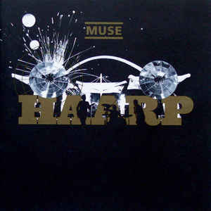

Integrantes
Matt Bellamy
Cantante / Guitarrista
Christopher Wolstenholme
Bajista
Dominic Howard
Baterista
Discografia


HAARP
Año de de lanzamiento: 2008
Cerrar
Lista de canciones
| N° | Título | Duración |
|---|---|---|
| 1. | Algorithm | 4:05 |
| 2. | The Dark Side | 3:47 |
| 3. | Pressure | 3:55 |
| 4. | Propaganda | 3:00 |
| 5. | Break It To Me | 3:37 |
| 6. | Something Human | 3:46 |
| 7. | Thought Contagion | 3:26 |
| 8. | Get Up and Fight | 4:04 |
| 9. | Blockades | 3:50 |
| 10. | Dig Down | 3:48 |
| 11. | The Void | 4:44 |
Cerrar
Lista de canciones
| N° | Título | Duración |
|---|---|---|
| 1. | Dead Inside | 4:22 |
| 2. | Drill Sergeant | 0:21 |
| 3. | Psycho | 5:16 |
| 4. | Mercy | 3:51 |
| 5. | Reapers | 5:59 |
| 6. | The Handler | 4:33 |
| 7. | JFK | 0:54 |
| 8. | Defector | 4:33 |
| 9. | Revolt | 4:05 |
| 10. | Aftermath | 5:47 |
| 11. | The Globalist | 10:07 |
| 12. | Drones | 2:49 |
Cerrar
Lista de canciones
| N° | Título | Duración |
|---|---|---|
| 1. | Supremacy | 4:55 |
| 2. | Madness | 4:39 |
| 3. | Panic Station | 3:03 |
| 4. | Prelude | 1:03 |
| 5. | Survival | 4:17 |
| 6. | Follow Me | 3:51 |
| 7. | Animals | 4:23 |
| 8. | Explorers | 5:48 |
| 9. | Big Freeze | 4:41 |
| 10. | Save Me | 5:09 |
| 11. | Liquid State | 3:03 |
| 12. | The 2nd Law: Unsustainable | 3:48 |
| 13. | The 2nd Law: Isolated System | 4:59 |
Cerrar
Lista de canciones
| N° | Título | Duración |
|---|---|---|
| 1. | Uprising | 5:03 |
| 2. | Resistance | 5:46 |
| 3. | Undisclosed Desires | 3:56 |
| 4. | United States of Eurasia (+Collateral Damage) | 5:47 |
| 5. | Guiding Light | 4:13 |
| 6. | Unnatural Selection | 6:54 |
| 7. | MK Ultra | 4:06 |
| 8. | I Belong to You (+Mon Cœur S'ouvre a ta Voix) | 4:18 |
| 9. | Exogenesis: Symphony Part 1 (Overture) | 4:18 |
| 10. | Exogenesis: Symphony Part 2 (Cross-Pollination) | 3:56 |
| 11. | Exogenesis: Symphony Part 3 (Redemption) | 4:37 |
Cerrar
Lista de canciones
| N° | Título | Duración |
|---|---|---|
| 1. | Take a Bow | 4:35 |
| 2. | Starlight | 3:59 |
| 3. | Supermassive Black Hole | 3:29 |
| 4. | Map of the Problematique | 4:17 |
| 5. | Soldier’s Poem | 2:03 |
| 6. | Invincible | 5:00 |
| 7. | Assassin | 3:31 |
| 8. | Exo-Politics | 3:53 |
| 9. | City of Delusion | 4:48 |
| 10. | Hoodoo | 3:43 |
| 11. | Knights of Cydonia | 6:06 |
Cerrar
Lista de canciones
| N° | Título | Duración |
|---|---|---|
| 1. | Intro | 0:22 |
| 2. | Apocalypse please | 4:12 |
| 3. | Time Is Running Out | 3:56 |
| 4. | Sing For Absolution | 4:54 |
| 5. | Stockholm Syndrome | 4:58 |
| 6. | Falling Away With You | 4:40 |
| 7. | Interlude | 0:37 |
| 8. | Hysteria | 3:47 |
| 9. | Blackout | 4:22 |
| 10. | Butterflies and Hurricanes | 5:01 |
| 11. | The Small Print | 3:28 |
| 12. | Endlessly | 3:49 |
| 13. | Thoughts of a Dying Atheist | 3:11 |
| 14. | Ruled By Secrecy | 4:54 |
Cerrar
Lista de canciones
| N° | Título | Duración |
|---|---|---|
| 1. | Forced In | 4:18 |
| 2. | Shrinking Universe | 3:06 |
| 3. | Recess | 3:35 |
| 4. | Yes Please | 3:05 |
| 5. | Map of Your Head | 4:25 |
| 6. | Nature_1 | 3:39 |
| 7. | Shine Acoustic | 5:12 |
| 8. | Ashamed | 3:47 |
| 9. | The Gallery | 3:30 |
| 10. | Hyper Chondriac Music | 5:28 |
| 11. | Dead Star | 4:11 |
| 12. | In Your World | 3:10 |
Cerrar
Lista de canciones
| N° | Título | Duración |
|---|---|---|
| 1. | New Born | 6:02 |
| 2. | Bliss | 4:12 |
| 3. | Space Dementia | 6:22 |
| 4. | Hyper Music | 3:20 |
| 5. | Plug in Baby | 3:40 |
| 6. | Citizen Erased | 7:21 |
| 7. | Micro Cuts | 3:38 |
| 8. | Screenager | 4:19 |
| 9. | Darkshines | 4:47 |
| 10. | Feeling Good | 3:19 |
| 11. | Megalomania | 4:38 |
Cerrar
Lista de canciones
| N° | Título | Duración |
|---|---|---|
| 1. | Sunburn | 3:54 |
| 2. | Muscle Museum | 4:22 |
| 3. | Fillip | 4:01 |
| 4. | Falling Down | 4:33 |
| 5. | Cave | 4:45 |
| 6. | Showbiz | 5:17 |
| 7. | Unintended | 3:57 |
| 8. | Uno | 3:39 |
| 9. | Sober | 4:02 |
| 10. | Escape | 3:31 |
| 11. | Overdue | 2:26 |
| 12. | Hate This & I’ll Love You | 5:09 |